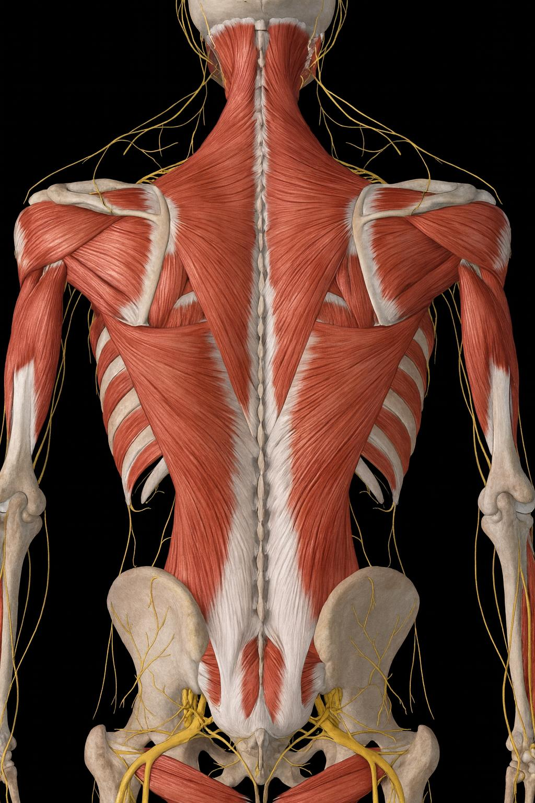
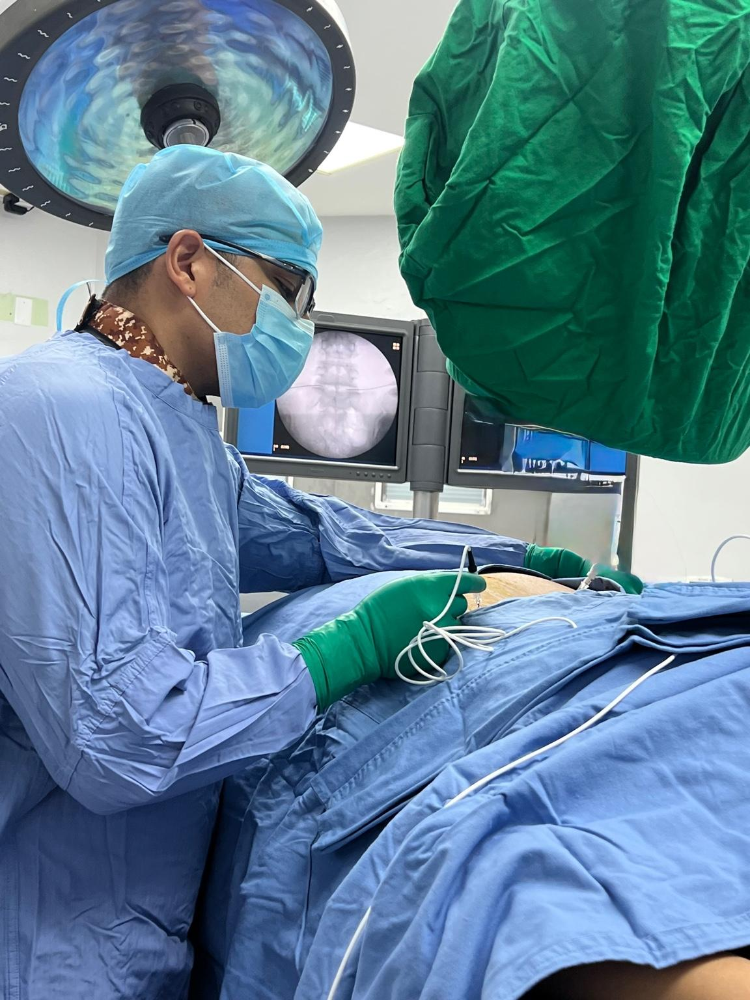

Dorsalgia
La dorsalgia es el dolor localizado en la parte media de la espalda, en la región dorsal. Puede originarse en músculos, articulaciones, discos intervertebrales o nervios.

¿Qué es la dorsalgia?
Es el dolor que se presenta en la columna torácica, generalmente entre los omóplatos. Puede ser de origen muscular, articular o por irritación nerviosa.

Síntomas más comunes
- Dolor entre los omóplatos.
- Presión o sensación de quemazón en la espalda media.
- Dolor que aumenta con ciertas posturas.
- Espasmos musculares.
- Dolor irradiado hacia el pecho o abdomen (ocasional).
Causas frecuentes
- Mala postura por laptop o celular.
- Debilidad muscular dorsal.
- Sobrecarga o movimientos repetitivos.
- Artrosis de articulaciones costovertebrales.
- Hernia torácica (menos frecuente).
¿Cómo se diagnostica?
- Evaluación clínica.
- Rx de columna torácica si hay signos de alarma.
- Resonancia en casos seleccionados.
- Bloqueos diagnósticos cuando se sospecha origen articular.
Tratamientos médicos y rehabilitación
Medicamentos
- Antiinflamatorios.
- Relajantes musculares.
- Analgésicos según intensidad.
Rehabilitación
- Fisioterapia para movilidad dorsal y fortalecimiento.
- Corrección postural y ergonomía.
- Ejercicios para estabilizar columna torácica.
- Terapia manual.
Procedimientos intervencionistas
Indicado cuando el dolor persiste o limita actividades.
- Bloqueo de articulaciones costovertebrales.
- Bloqueos facetarios torácicos.
- Radiofrecuencia torácica.
- Infiltración muscular paravertebral.
- PRP en zonas musculares crónicas.

Prevención
- Mejorar postura en escritorio.
- Realizar ejercicios de extensión torácica.
- Fortalecer musculatura dorsal.
- Evitar cargar peso de forma incorrecta.